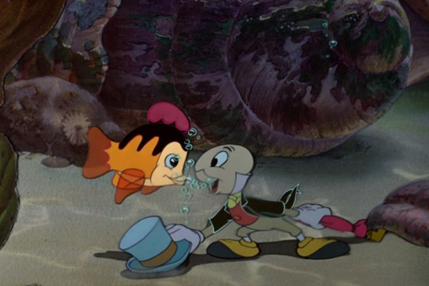

Of course, "Snow White and the Seven Dwarfs" was the movie that put Walt Disney Studios on the map. But their second movie, 1940's "Pinocchio," would become arguably more influential in the company's branding, with Jiminy Cricket becoming a secondary mascot for Disney, and the idea of the Wishing Star and its theme song becoming iconic symbols. "Pinocchio" and "Peter Pan," and perhaps "Cinderella," all had a big effect on Disney's overall branding, which might have been part of a grander plan and an example of Walt Disney's foresight. "Pinocchio" is based on a popular Italian children's novel, which would later become one of the most widely adapted stories in cinema (Wikipedia currently listed over 20 movies so far). It continues Disney's tradition of adapting old European fairy tales, like "Snow White" from Germany. Curiously, Disney's version of "Pinocchio" is rather misleading in its setting, taking a lot of influence from both Italy and Germany in its characters and design. When the movie released, World War II was also in full swing, with both Germany and Italy being on the bad side... maybe we'll pretend Disney's story took place in Austria or elsewhere. Of Disney's traditional stories from their first couple decades, both "Pinocchio" and "Bambi" stand out as my personal favorites. "Pinocchio" is particularly entertaining to me as a boy, since it isn't a princess-fantasy, and is basically a overblown propoganda warning for children to behave, less something terrible happens to them. The things the lead character gets put through are surprisingly nightmarish. Beyond that, of course, the sincere kindness and innocence of the characters and the story also help it stand the test of time. You probably already know the story. Old man Geppetto is a talented clock-maker and pupper-maker, his workshop full of wonderful toys and delights. But he lives alone, except for a tiny cat Figaro and pet goldfish Cleo. When finishing a new puppet, whom he names Pinocchio, he notices a birght wishing star in the night sky, and makes an offhanded wish that his puppet could be a real boy (there's no lead-up about him being particularly lonely, having a deceased son, or any other reasoning). To everyone's surprise, the star comes down as a blue fairy, and grants the wish, giving Pinocchio life, walking and talking all on his own! But he's still made of wood: he must prove himself to be brave, truthful and unselfish for the spell to complete. The small Jiminy Cricket, a pauper wandering in to enjoy the warm fire, happens to be present when the puppet comes alive, and volunteers to be Pinocchio's conscience, getting a swell new suit in exchange. Jiminy is a fun entry into the story, narrating from the start, and giving us a different perspective from ground-level, or close-up shots of Geppetto's wonderful clocks and music boxes. He's not exactly pure of heart himself: he frequently flirts with pretty toy girls that are his size, and tends to oversleep when Pinocchio gets sidetracked off the straight and narrow path. But Pinocchio is so innocent and naive, like a boy discovering the world for the first time, that having a presence like Jiminy is necessary to understand what to do. ... not that Pinocchio ever follows Jiminy's advice. His arc follows three different acts, when he was supposed to simply go to school. In the first act, he's tricked by Honest John the fox and Gideon the cat to be sold to Stromboli for a life as a performer. Second, he's tricked into joining the Coachman to Pleasure Island along with other misbehaving boys. Finally, upon coming home and discovering that Geppetto went looking for him, and was eaten by Monstro the Whale, Pinocchio doesn't hesitate to go out and find his father in the sea, however dangerous the task might be. Part of the charm of the movie is not knowing exactly where the plot would go next, since this isn't your standard "Prince saves the Princess" story. The villains hold up as among the more cartoonish, but also downright evil of Disney's canon, with only John and Gideon standing out as unusual (in a world of humans and pets, why are there giant humanoid foxes and cats walking around? Technically, this is true to the original book, but still...). The production quality is similar to "Snow White," but with a greater leaning to cartoonish human designs, to its favor (the Blue Fairy is the only character that's plainly pretty). Some other new techniques are also utilized to create depth or a fake camera pan from the top of the town. It looks beautiful, and the animation still holds up as being expressive and smooth, even better than most 2D animation today. The voice acting's variety and personalities are more memorable, led by Jiminy and his Bing-Crosby-esque persona. And the music dersves high scores, if only for the song "When You Wish Upon A Star," one of the most iconic and beautiful songs in American cinema, let alone Disney's movies. Even decades later, and as an adult, there's so much to love about "Pinocchio." It's not as quick or as entertaining as Disney's more modern movies, but by golly, it's more effortlessly charming in an old-school sort of way.
- "Ani" More reviews can be found at : https://2danicritic.github.io/ Previous review: review_Ping_Pong_the_Animation Next review: review_Planetarian